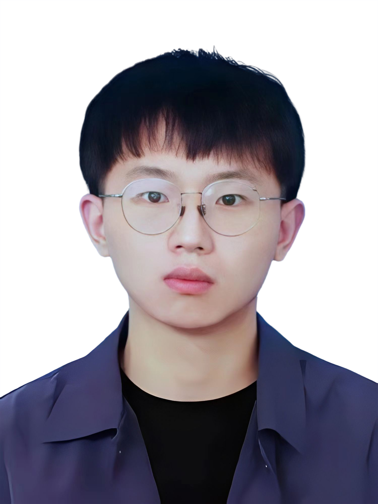

|
Dongzhou Cheng
I am a third-year graduate student at the School of Electrical and Automation Engineering, Nanjing Normal University, supervised by Prof. Lei Zhang .
My research interests is building Effective and Efficient Sensing Systems, with a primary focus on developing privacy-preserving machine learning like Federated Learning for Smart Health applications.
Email /
CV /
Google Scholar /
Github
|

|
Major Publications
|
|
Learning hierarchical time series data augmentation invariances via contrastive supervision for human activity recognition
Dongzhou Cheng, Lei Zhang, Can Bu, Hao Wu and Aiguo Song.
[KBS] Knowledge-Based Systems (IF: 8.8, TOP), 2023
It's an interesting work, at least for me :)
[Paper]
[Code]
|
|
|
ProtoHAR: Prototype Guided Personalized Federated Learning for Human Activity Recognition
Dongzhou Cheng, Lei Zhang, Can Bu, Xing Wang, Hao Wu and Aiguo Song.
[IEEE JBHI] IEEE Journal of Biomedical and Health Informatics (IF: 7.7, TOP), 2023
[Paper]
[Code]
|
Other Publications
- I have seven more papers that are being reviewed or undergoing major revisions.
IEEE Sensors, IEEE TMC, IEEE IOTJ, IEEE TIM, ESWA, KBS, IEEE TETCI.
- Two works are in progress.
Selected Awards
- I ranked First while pursuing my master's degree (1/105, 2023).
- I ranked First in my undergraduate study (1/36, 2019).
- The code (80+ stars) I implemented was reproduced by some Official Accounts such as 极市平台 and CVHub.
- Participated in one National and two Provincial College Students' Innovative Entrepreneurial Training Plan Program.
- Achieved the best accuracy (No.1 of 30+ teams) in the Huawei Cloud Food Recognition Competition, 2019. Bonus: 6000 RMB.
Academic Experience
Invited Reviewer
- Artificial Intelligence Review (IF:12.0)
© Dongzhou Cheng | Last updated: Aug 3, 2023
|
{kind=link}